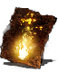

Descrição: Uma das piromancias perdidas preservadas somente na Cripta dos Mortos-Vivos. Cria uma chama agradável que cura aqueles que a tocam.
O fogo pode ser uma mostra de poder, mas é também símbolo de sabedoria e conforto. O fogo é o que o conjurador quiser que ele seja.
Localização:
Usos: 4
